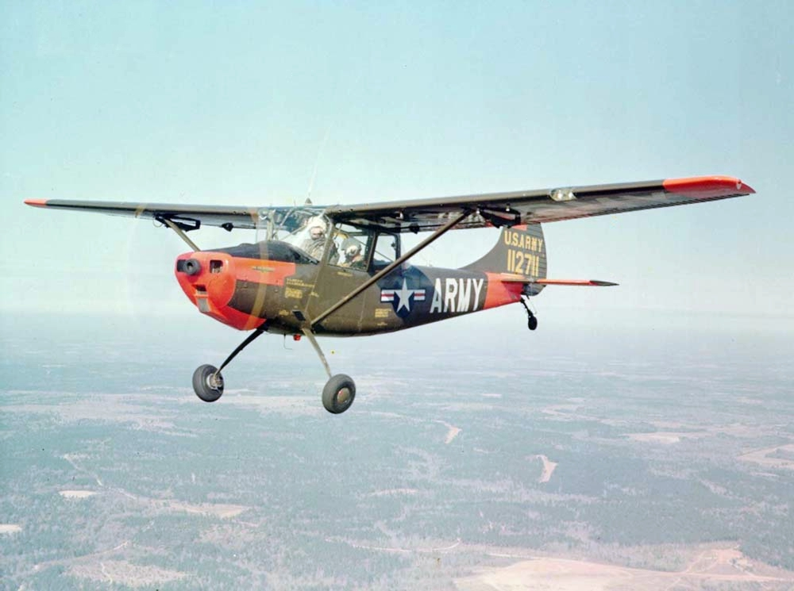

Observation aircraft, also known as reconnaissance aircraft or surveillance aircraft, are specialized aircraft designed for gathering information and conducting surveillance missions. These aircraft are primarily utilized for intelligence, surveillance, and reconnaissance (ISR) operations, providing valuable visual or electronic data for military, civilian, or scientific purposes. The main purpose of observation aircraft is to collect information about enemy activities, monitor specific areas of interest, or gather data for mapping and scientific research. These aircraft are equipped with a variety of sensors, cameras, and advanced imaging systems to capture images, videos, and other data from the air. Observation aircraft are often designed to operate at lower altitudes and slower speeds compared to other military aircraft. This allows them to have a more detailed and comprehensive view of the target area. They are built with features to enhance stability and reduce vibrations, ensuring clear and high-resolution imagery. Depending on the mission requirements, observation aircraft can be equipped with different types of sensors and systems. These include electro-optical sensors, infrared cameras, radar systems, signals intelligence (SIGINT) equipment, and even specialized equipment for detecting chemical, biological, radiological, and nuclear (CBRN) threats.